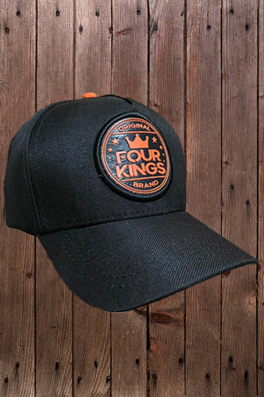

Uma ideia que vem maturando há muito tempo toma forma. A Four Kings não vem para mudar o mercado, mas sim, para mostrar uma maneira diferente, e própria, de estilo.
Um conselho formado por quatro reis famosos da cultura pop, fantasia e realidade dá o tom das ideias e dos ideais da 4k.
Cada um desses reis, de acordo com sua história e cultura apadrinha uma estação do ano com um estilo de arte exclusiva e única. Junto a isso, o reino mantem uma coleção permanente, salvo vez ou outra, em que outros reis aparece na Four Kings com um item único e exclusivo.

ROUPAS
